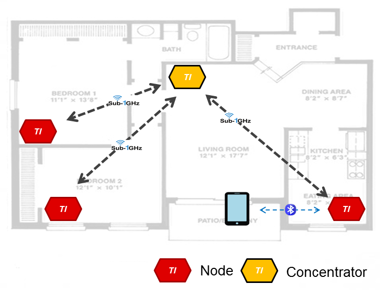
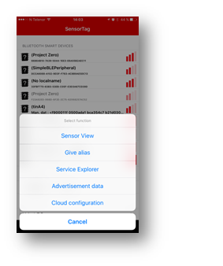
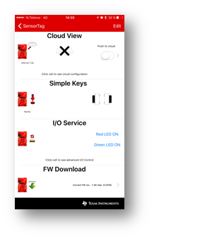
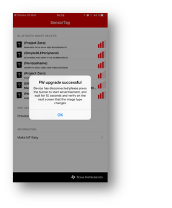
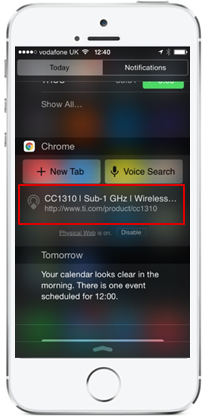
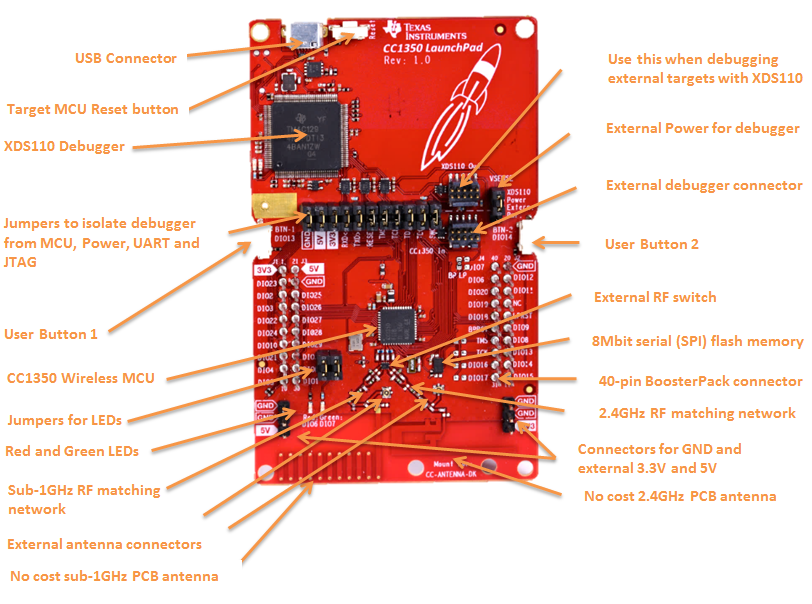

The CC1350 LaunchPad is TI’s first dual-band kit utilizing the CC1350 which enables Sub-1GHz + BLE in a single chip solution. This new LaunchPad kit brings easy and low cost sub-1GHz proprietary RF connections to the LaunchPad ecosystem with the SimpleLink ultra-low power CC13xx family of devices. This LaunchPad kit brings support for the CC1350 wireless MCU
The CC1350 device is a wireless MCU featuring sub-1GHz RF GFSK, Long Range Mode (LRM, a direct sequence spread spectrum modulation format), and other sub-1GHz modulations - in addition it supports 2.4GHz RF! The CC1350 device contains a 32-bit ARM® Cortex®-M3 processor that runs at 48 MHz as the main processor and a rich peripheral feature set that includes a unique ultra-low power sensor controller. This sensor controller is ideal for interfacing external sensors and for collecting analog and digital data autonomously while the rest of the system is in sleep mode.
The CC1350 LaunchPad is supported by a large set of software examples in the TI-RTOS CC13xx/CC26xx SDK, showing best practice on how to implement and use different features of the CC1350. An overview for the software examples can be found on this web page. The CC1350 is also supported by the TI BLE software stack, which enables full BLE connectivity.
For this Out of the box project you'll need at least two CC1350 Launchpads to transmit and receive data between them, one LaunchPad will act as a concentrator and one or more will act as nodes in a wireless sensor network. Both the Concentrator and Node Launchpads can be connected to a LCD Boosterpack.
To see all available resources associated with the CC1350, click on this link to filter out all the incompatible projects and collateral.
Available in resource explorer are code examples using TI-RTOS CC13xx/CC26xx SDK, documentation, Software Developers Guide and links to wiki articles and more. Feel free to navigate the available resources to jump-start your development.
The CC1350 LaunchPad is pre-programmed with the TI BLE stack, allowing you to connect to the device using e.g. the SensorTag iOS/Android smartphone app. When connected the cc1350 device offers the same functionality as e.g. the cc2650 Launchpad. Using the built in BLE Over the Air Download (OAD) one can easily convert the CC1350 device from a BLE device into e.g. a sub-1GHz device, due to the dual mode capabilites of the CC1350. In this step by step guide we will show you how to download new application images to create a small wireless sensor network. The sensor network includes a concentrator that receives sub-1GHz data and Nodes that send data over the sub-1GHz link to the concentrator and in addition reconfigures the radio core on the fly to send out BLE advertisement packets. A high level overview of the complete demo is shown in the picture below.





Please visit CC1350 Project 0 for instructions on how to build your own image and use BLE OAD to download to your device.

The LaunchPad is designed to be powered from a USB-compliant power source, either a USB charger or a computer. When used this way, jumpers need to be mounted on the 3V3 position of the central jumper block. An LDO powered from the USB VBUS supply supplies 3.3V to the XDS debugger, the CC1350, and associated circuitry including the 3V3-marked pins for BoosterPacks.
The LaunchPad is designed for operation -25 to +70 C. Note that other BoosterPacks and LaunchPads may have different temperature ranges, and when combined, the combination will be set by the most restrictive combined range.
The jumper block in the middle of the board can be used to disconnect the upper section (XDS110 debugger) from the bottom section (CC1350). The jumpers are mounted by default. If you want to debug the CC1350 from an external debugger, you need to remove all the jumpers and connect the debugger to the socket marked CC1350 In.
It is also possible to use the CC1350 LaunchPad to debug external targets. In this case, remove all the jumpers and connect the external target to the socket marked XDS110 Out.
The jumper block marked VSENSE can be used to select the source of power to the CC1350. Usually, power is supplied from USB and a jumper is mounted in the position marked XDS110 power (factory default). If you want to power CC1350 from an external supply, move the jumper to the position marked Extern. Pwr, and connect the external supply to the 3V3 pin on J1. Also make sure to remove the 3V3 jumper from the main jumper block. Make sure that the voltage applied stays within the supply range of the CC1350.